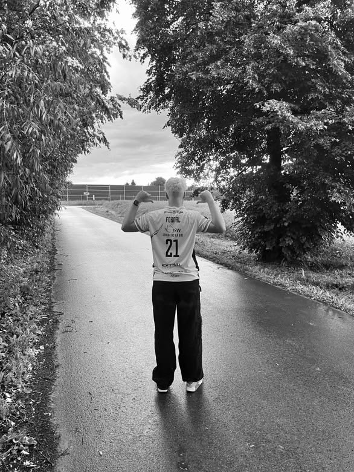

Fotografia sportowa
Mecze, turnieje i treningi. Piłka nożna, siatkówka oraz sportowe emocje.
Obserwuję. Czekam. Naciskam spust migawki. Fotografia sportowa i reportażowa oparta na autentycznych emocjach, ruchu i świetle.
Każde zdjęcie zatrzymuje fragment historii. Zobacz wybrane momenty z boiska, wydarzeń i spotkań.

Cześć, jestem fotografem z Lublina. Najbliższa jest mi fotografia sportowa — piłka nożna, siatkówka i wszystkie momenty, w których emocje są prawdziwe, a akcja dzieje się w ułamku sekundy.
W fotografii szukam autentyczności. Nie tylko wyniku i zwycięstwa, ale też koncentracji, wysiłku, radości i atmosfery, które tworzą całe wydarzenie.
Od szybkiej akcji na boisku po spokojniejsze kadry poza nim. Każdy projekt to osobna historia.
Mecze, turnieje i treningi. Piłka nożna, siatkówka oraz sportowe emocje.
Koncerty, wydarzenia i kulisy — naturalne kadry oddające atmosferę chwili.
Indywidualne zdjęcia, sportowe portrety i materiały do mediów społecznościowych.
Masz pomysł na sesję, organizujesz wydarzenie lub szukasz fotografa sportowego? Opowiedz mi o swoim projekcie.